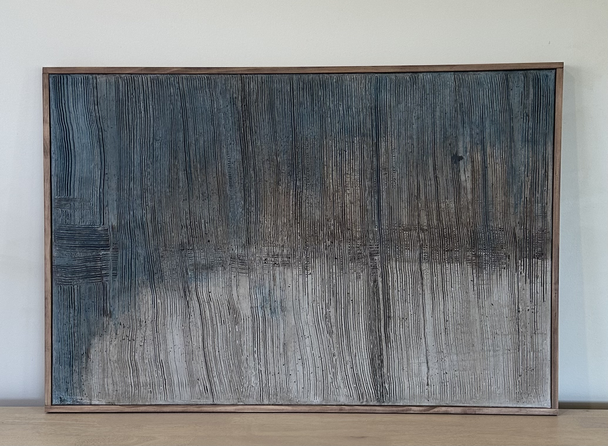
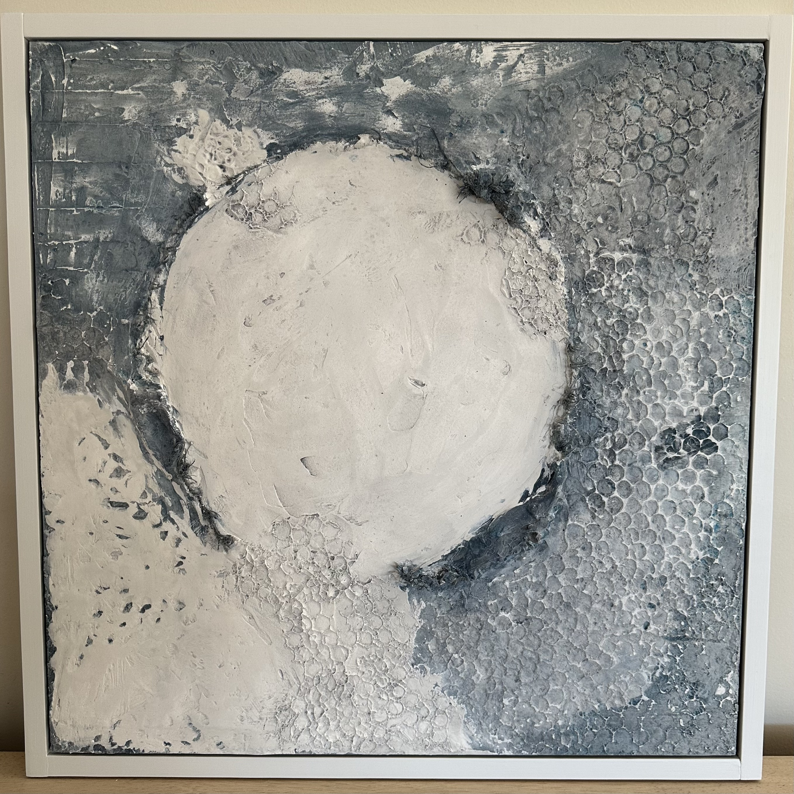
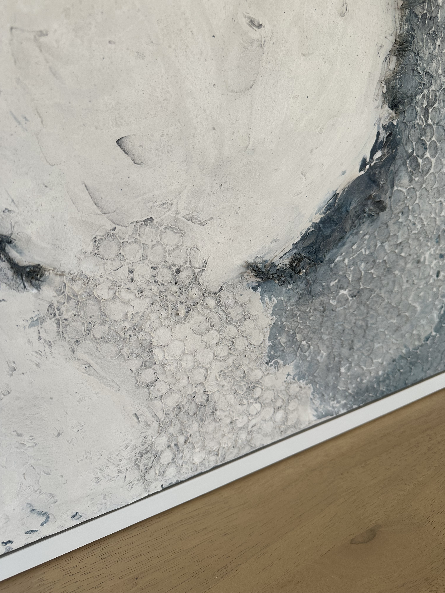
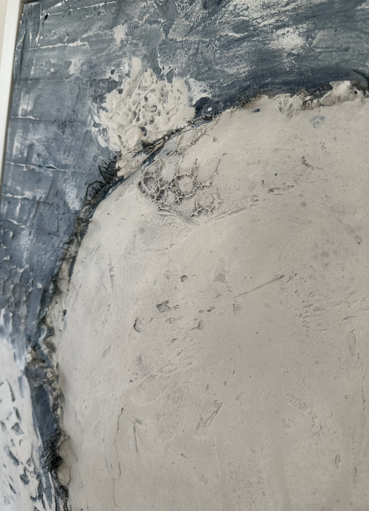
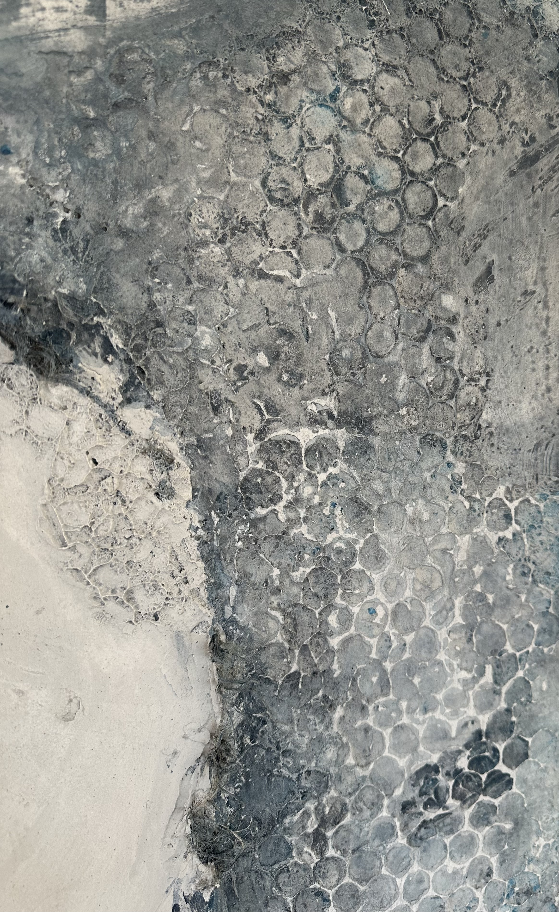

The Stains of Life
900 × 600 mm | Mixed media on board | Framed
Original one-of-a-kind pieces · Please enquire for availability

900 × 600 mm | Mixed media on board | Framed


900 × 600 mm | Mixed media on board | Framed The Dependant Rhythm explores the tension between repetition and disruption — the ways we move through life in patterns that feel familiar, even as they shift, fracture and change. Built through layers of texture, sand, plaster, washes and staining, the work combines muted blue, charcoal and earthy neutrals with dark descending marks and weathered surfaces. Earlier layers remain visible beneath the final finish, creating a sense of history, erosion and quiet persistence. The central textured band acts almost like a pulse through the piece — holding together areas that feel at once connected, interrupted and dependent on one another. Original mixed-media artwork | 1/1 | 2026




645 X 645 mm | Mixed media on board | Framed Remnant explores what remains after time, experience and change have altered the surface. Layers of plaster, hessian and paint are built up, worn back and partially erased, leaving traces of what once existed. Cellular forms emerge and disappear across the surface, creeping into a quieter central space, while exposed fibres remain embedded along its imperfect boundary. Soft whites contrast with weathered blue-greys, creating a sense of something uncovered yet still partially concealed. Rather than hiding the evidence of erosion, Remnant allows it to remain—marks, fibres and fragmented textures becoming a record of what has endured. Original mixed-media artwork | 1/1 | 2026
1200 X 1000 mm | Mixed media on board | Framed Where Silence Settles explores what remains after disruption—the traces of experience that become embedded within us long after the moment itself has passed. A fractured line moves across the work, separating a dense, weathered landscape from a quieter expanse above. Exposed hessian, cellular impressions and eroded layers suggest accumulated histories, while charcoal and restrained blue washes gather within crevices and worn surfaces. Yet the quiet space is not empty. Subtle marks, scars and remnants remain visible beneath its softened surface, reflecting the idea that healing does not erase what came before. Through layers of plaster, fibre, texture and pigment, Where Silence Settles considers the tension between fragility and resilience, damage and repair, and the stillness that can eventually emerge from what we have endured. Original mixed media artwork | 1/1 | 2026
1190 X 900 mm | Mixed media on board | Framed What Is It We Chase? explores our relentless pursuit of something just beyond reach — perfection, success, acceptance, control, or simply the feeling that we have finally arrived. Smooth, seemingly perfect forms gather and move through a fractured, organic passage, creating a tension between order and imperfection. Their path winds rather than travels cleanly forward, suggesting that what we pursue — and what we believe will make us whole — is rarely as simple as it first appears. The surrounding stillness offers a counterpoint to that movement: a quiet space in which to consider what drives us forward, what we sacrifice along the way, and whether the thing we are chasing was ever the thing we truly needed. Original mixed media artwork | 1/1 | 2026